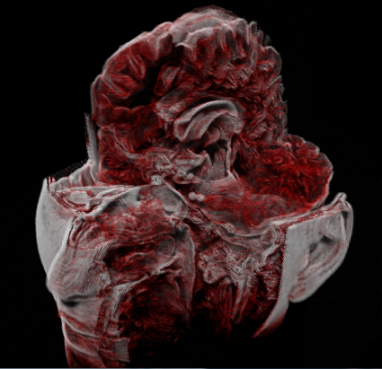
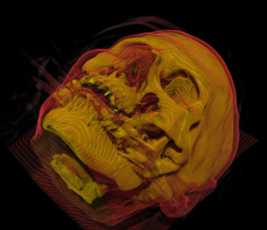
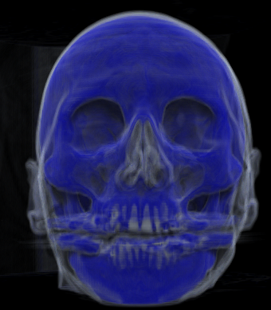
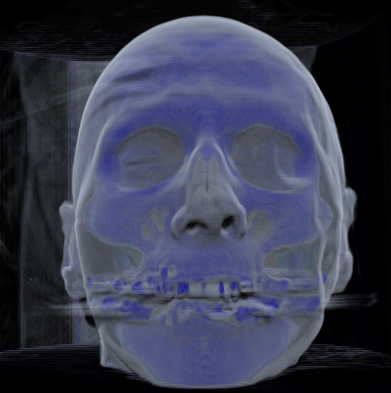
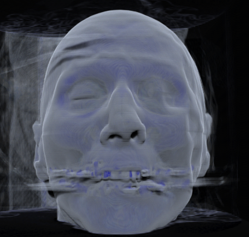

|
Here are some screenshots showing images captured form the Volume Viewer:
This is the simplest view available. The model is
rendered simply by comparing its density at any
particular point to a color map provided by the
user.
Sections removed, Diffuse Light
|

|
Here the head is shown with sections cut away.
Shadows are added to provide visual cues. Some
sections of uniform density are not drawn, giving
the model a hollowed out look.
Side view, shadows, hollowed out
|
|
Another hollowed out view, this time from the side. The
color map the user provides to the program can define
transparent regions so that edges are prominent.
Here is the above view rendered with different lighting
parameters. Here internal material is not removed during
the rendering, giving it a much more solid look. A
different color scheme is also used.
The full model is shown, with shadows.
Similar to the above, but the entire model has been
made more translucent, giving it a softer appearance.
In this model, the dense bony areas are given a solid
orange color while the less dense skin is given a thin
red color. This allows the skull to appear clearly while
still giving an indication of the facial features.
Skull perspective, few layers
|

|
Same as above, except fewer slices are rendered.
Notice the increased banding. Using fewer layers can
make it easier to manipulate the model at the
expense of a more banded rendering quality.
Another view of the skull from the side.
Using a cut away view with no shadows can show
skeletal features vividly.
By using a Phong lighting effect, you can provide
a shinier, plastic like appearance.
Skull translucent
|

|
|

|
|

|
Finally, here is a shadowed view rendered with
varying levels of transparency. More transparent
views allow more of the underlying structure to
be seen.
|